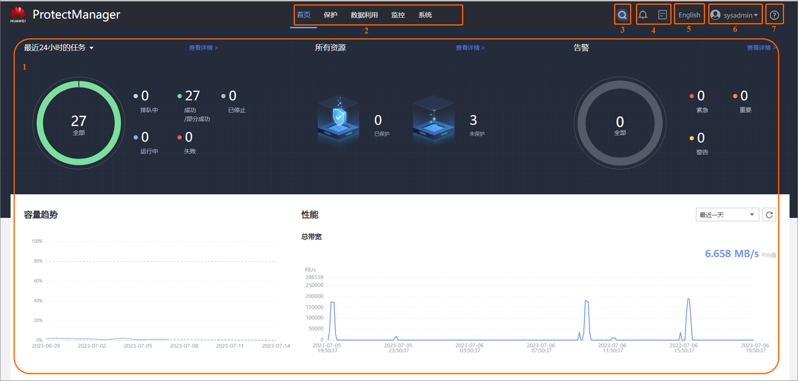

ProtectManager是数据保护业务管理软件，可以扫描发现存储侧文件系统，通过为文件系统添加保护，将文件系统中的数据备份到对象存储。当存储侧文件系统中的数据损坏或丢失时，ProtectManager利用用户保存的指定时间点的备份副本恢复数据。
主界面介绍
ProtectManager的主界面如图1所示。

各部分的描述如表1所示。
表1 ProtectManager界面组成序号
|
名称
|
说明
|
|---|
1
|
信息展示区
|
信息展示区显示了当前操作的相关界面，并可供用户进行操作。
|
2
|
导航栏
|
导航栏上列出了系统的各个功能模块。
|
3
|
全局搜索区
|
全局搜索区中显示了系统支持的搜索范围和搜索内容。
|
4
|
告警和任务统计区
|
告警统计区上显示了系统各级别告警的数量，用户可以了解当前系统的运行状态。
任务统计区上显示了用户执行的任务，可以了解任务是否执行成功。
|
5
|
中/英文切换区
|
进行中/英文切换。
|
6
|
注销区
|
注销区包含注销按钮和修改密码按钮。
|
7
|
帮助区
|
提供联机帮助和软件版本信息。
|